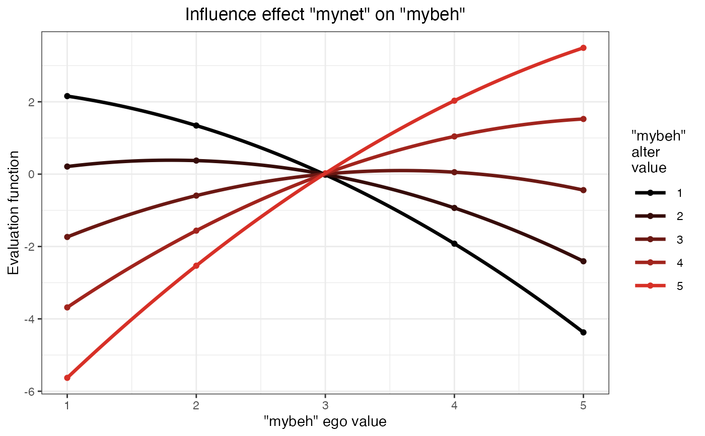

These are functions for constructing and presenting influence tables for the interpretation of results for network and behavior dynamics obtained with the RSiena or multiSiena packages.
Usage
# S3 method for class 'influenceTable'
plot(x, separation = 0, ...)References
Consult also the RSiena manual, Sections 13.2 and 13.4. Gratitude to Steffen Triebel and Rene Veenstra for corrections.
Examples
plot(res_siena_influence)
